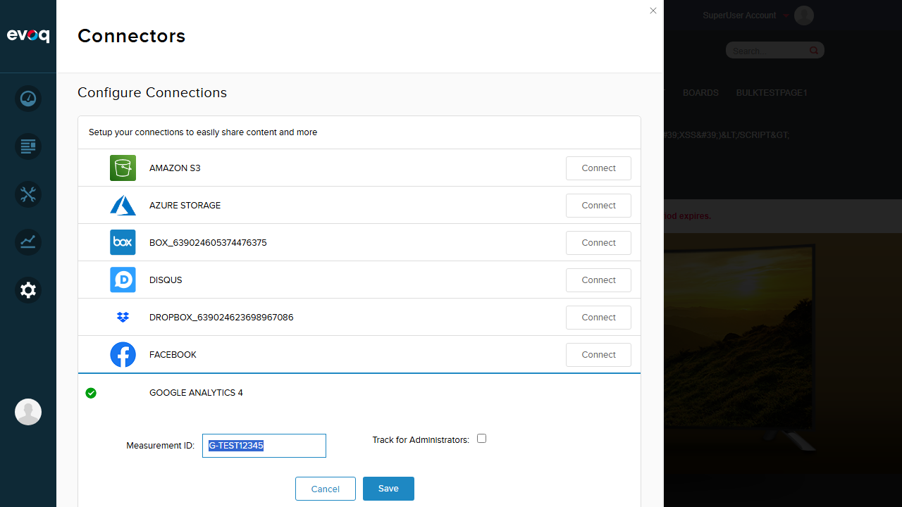
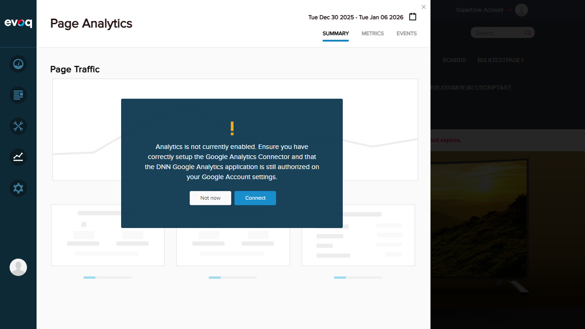

Test Environment Setup
Website URL: http://localhost:8081
Login: SuperUser Account (host)

Screenshot: Logged in as SuperUser Account, Connectors panel visible
Extension: Evoq.Content.GoogleAnalyticsConnector
Feature Priority: High
UI Location: Backend service (no direct UI)
Test Date: January 6, 2026
Manages OAuth tokens for Google Analytics API access with caching and refresh capabilities. This is a backend service that handles token acquisition, caching, and cache clearing for the Google Analytics connector.
Evoq Enterprise/Connectors/GoogleAnalytics/Components/Authorization/TokenServiceImpl.csEvoq Enterprise/Connectors/GoogleAnalytics/Components/GoogleAnalyticsRemoteManager.csEvoq Enterprise/Connectors/GoogleAnalytics/Services/ServicesController.csEvoq Enterprise/Connectors/GoogleAnalytics/Scripts/authorize.jsThe Token Management and Caching feature is implemented through the following components:
| Component | Function | Description |
|---|---|---|
TokenServiceImpl.cs |
ObtainToken() |
Wraps TokenService with TokenCachedService for caching functionality |
TokenServiceImpl.cs |
ClearCache() |
Clears cached tokens for specific portal and user |
GoogleAnalyticsRemoteManager.cs |
ObtainToken() |
Gets tokens via TokenServiceImpl for API authorization |
ServicesController.cs |
GetToken endpoint |
API endpoint that clears cache first, then obtains fresh token |
ServicesController.cs |
Deauthorize endpoint |
API endpoint that clears the token cache |
authorize.js |
getToken() |
JavaScript function that calls GetToken API to retrieve cached tokens |
authorize.js |
onUnAuthorize() |
JavaScript function that triggers token cache clearing via Deauthorize API |
Website URL: http://localhost:8081
Login: SuperUser Account (host)
Screenshot: Logged in as SuperUser Account, Connectors panel visible
| Scenario | Status | Reason |
|---|---|---|
| Obtain new token for authorized user | NO UI | Backend service - no direct UI to test |
| Retrieve cached token for subsequent requests | NO UI | Backend service - no direct UI to test |
| Clear token cache manually | NO UI | Backend service - no direct UI to test |
| Handle token expiration and refresh | NO UI | Backend service - no direct UI to test |
| Test token storage per portal and user | NO UI | Backend service - no direct UI to test |
| Verify token security and encryption | NO UI | Backend service - no direct UI to test |
Objective: Find any UI elements that would trigger the Token Management functionality
Google Analytics 4 Configuration (uses Measurement ID, not OAuth):
Page Analytics Warning - Analytics Not Enabled:
Full Connectors List - No OAuth-based Google Analytics connector:

The Token Management and Caching feature is fully implemented in the codebase with the following capabilities:
TokenServiceImpl.ObtainToken() obtains tokens with caching via TokenCachedServiceTokenServiceImpl.ClearCache() clears cached tokens per portal/userGetToken and Deauthorize endpoints expose token operationsauthorize.js contains client-side logic for token retrieval and deauthorizationThe Token Management feature is designed for the OAuth-based Google Analytics connector (Universal Analytics). However:
The Page Analytics feature displays: "Analytics is not currently enabled. Ensure you have correctly setup the Google Analytics Connector and that the DNN Google Analytics application is still authorized on your Google Account settings."
This warning appears because the OAuth-based Google Analytics connector (which would use the Token Management feature) is not connected/available.
As stated in the feature description: "UI Location: Backend service (no direct UI)"
The Token Management and Caching operations occur automatically in the background when users interact with Google Analytics features. Without the OAuth-based Google Analytics connector available in the UI, there is no way to trigger or observe the token management functionality through manual UI testing.
To properly test this feature, one of the following would be needed:
GetToken and Deauthorize endpointsThe Token Management and Caching feature is a backend service that cannot be tested through the UI in the current environment. The feature code is confirmed to exist and is well-implemented, but the OAuth-based Google Analytics connector that would utilize this functionality is not available in the Connectors panel.
Per testing guidelines: "Feature exists in code but not visible in UI? Do NOT create a test for it. Add a note in the report under Observations." - This report documents the findings accordingly.